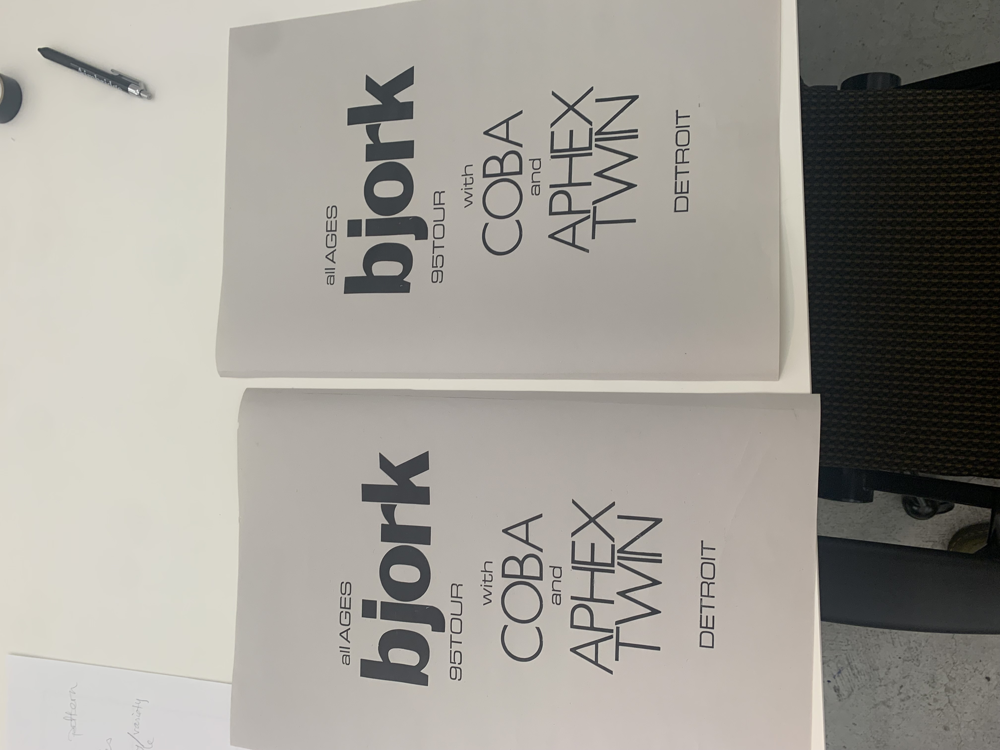
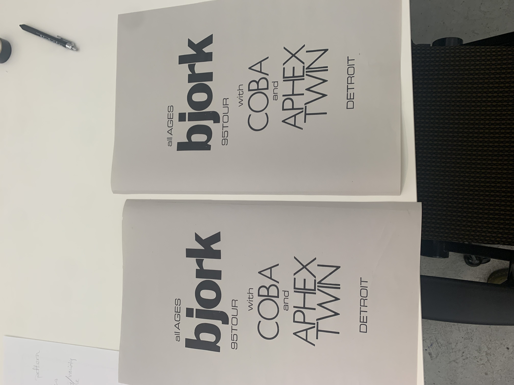

bjork concert poster
Drawing inspiration from an authentic concert poster dating back to 1995, I blended metal and wood types to craft a captivating visual hierarchy. My aim was to fashion a design that was simultaneously sleek and attention-grabbing, employing a restrained palette of colors and fonts. Utilizing letterpress techniques, I applied a combination of black and hot pink inks, manipulating the paper through varying angles within the press to evoke a striking dimensional quality. Additionally, I opted for newsprint paper to imbue the final piece with the weathered charm reminiscent of vintage concert posters.


 
